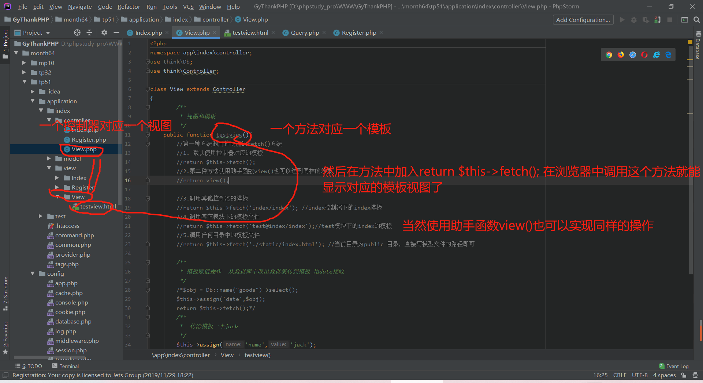

给模板赋值在这里用到了assign()这个函数，assign()函数第一个参数为给这个值自定义名称，第二个参数则是值
栗子：
public function testview(){
$date=Db::name("goods")->select();//数据库查询商品表 返回一个数据集
$this->assign('date',$date); //把数据集给到date
return $this->fetch();
}那么这样相应的模板就拿到了date这个数据集了，下面就是这么在模板中使用这个数据集，直接上代码：
<table>
<tr>
<th>商品ID</th>
<th>商品名称</th>
<th>商品价格</th>
<th>操作</th>
</tr>
{foreach $date as $value}
<tr>
<th>{$value.id}</th>
<th>{$value.goods_name}</th>
<th>{$value.price}</th>
<th><a href="#">删除</th>
</tr>
{/foreach}
</table>普通的HTML注释是无法注释{foreach}中的内容的，因为ThinkPHP会找到"{}"进行处理大括号中的内容，所以在这里我们用特殊的办法来注释，用 {/*注释的内容*/}这样的方法来注释下面举个栗子
<table>
<tr>
<th>商品ID</th>
<th>商品名称</th>
<th>商品价格</th>
<th>操作</th>
</tr>
<!--多行注释 用{/*注释的内容*/}-->
{/*
{foreach $date as $value}
<tr>
<!--单行注释 用{//注释的内容}-->
{//<th>{$value.id}</th>}
<th>{$value.goods_name}</th>
<th>{$value.price}</th>
<th><a href="#">删除</th>
</tr>
{/foreach}
*/}
</table>模板中也是可以使用strtoupper、md5等函数的，下面演示具体该怎么使用。
<!DOCTYPE html>
<html lang="en">
<head>
<meta charset="utf-8">
<title>test</title>
</head>
<body>
<!--
模版中的使用函数 例如后台传入一个jack，使用strtoupper()函数转成大写字母
-->
{$name | strtoupper}
<br>
<!--调用md5函数给name加密-->
{$name | md5}<br>
<!--多个使用函数 加密后字母大写-->
{$name | md5 | strtoupper}<br>
<!--使用指定class中的方法 如调用VERSION获取ThinkPHP的版本号-->
{:think\\APP::VERSION}
</body>
</html>